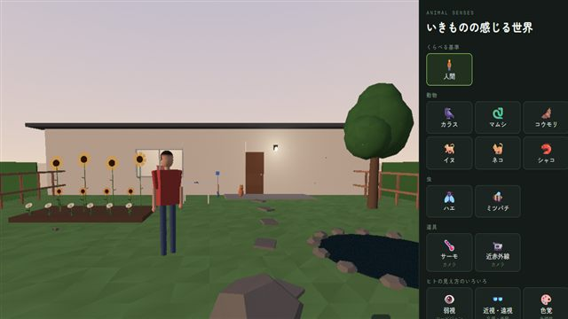

まなびラボ
ブラウザで動く学習用アプリのシリーズ。Claude（Claude Code）と一緒に作っています。学習用に簡単にしているところがあります。医療・健康の判断には使えません。
地球と宇宙
からだ


いきもの・物理

サムネイルは各アプリの画面です（tools/make-thumbs.ps1 で撮り直せます）。ソースコードと開発メモ: github.com/sishiya/manabi-lab
ブラウザで動く学習用アプリのシリーズ。Claude（Claude Code）と一緒に作っています。学習用に簡単にしているところがあります。医療・健康の判断には使えません。

サムネイルは各アプリの画面です（tools/make-thumbs.ps1 で撮り直せます）。ソースコードと開発メモ: github.com/sishiya/manabi-lab